Waypoint mission for BlueBoat
This walkthrough flies one waypoint mission on the simulated BlueBoat in ArduRover’s AUTO mode.
AUTO is the layer above the stabilization layer exercised in Tuning of closed-loop response. The waypoint navigator produces a speed and a turn rate, and those go to the same ATC_SPEED_* and ATC_STR_RAT_* loops. Two things are new. One is the heading controller ATC_STR_ANG_P, which the boat reaches when it pivots at a waypoint. The other is the waypoint navigation parameters (WP_*, WP_PIVOT_*, PSC_*), all at Blue Robotics’ shipped values.
Prerequisites
Setup and run the drydock + source development environment: installation_drydock.md
Verify the SITL connection (Boat) and Tuning of closed-loop response pass. If a mission does not run correctly, it is likely issues with the lower feedback control loops.
The mission
The mission is a fixed file installed with the package, blueboat_gazebo/missions/lawnmower.waypoints, in the QGC WPL format that both MAVProxy and QGroundControl read. It is a small lawnmower pattern: 10 m legs east and west, 5 m steps north between them, then a diagonal back to the start.
Item |
North [m] |
East [m] |
Leg into it |
|---|---|---|---|
0 (home) |
0 |
0 |
|
1 |
0 |
10 |
10 m east, the direction the boat spawns facing |
2 |
5 |
10 |
5 m north, after a 90° pivot |
3 |
5 |
0 |
10 m west, after a 90° pivot |
4 |
10 |
0 |
5 m north, after a 90° pivot |
5 |
10 |
10 |
10 m east, after a 90° pivot |
6 |
0 |
0 |
14 m diagonal home, after a 135° pivot |
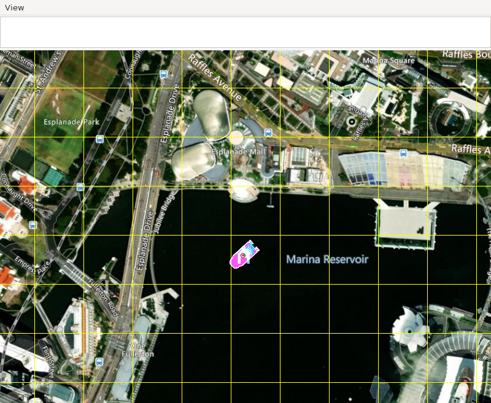
Home is in Marina Reservoir, Singapore. At this zoom the 10 m course is hidden under the boat icon.
The waypoints are geodetic (lat/lon/alt), so they make sense where intended against a fixed home location. The walkthrough sets it with --custom-location to a point in Marina Bay, Singapore, so the map shows open water. Gazebo’s +X is east here (gazeboXYZToNED in the model), and the boat spawns with its bow along +X, so the first leg starts dead ahead.
Every turn in this mission is sharper than WP_PIVOT_ANGLE (45°), so at each waypoint the boat stops and pivots at up to WP_PIVOT_RATE (15 deg/s) before setting off down the next leg.
Walkthrough
All commands are issued within the drydock dev container. Two shells, as in the verification walkthrough.
First, the simulation:
source ~/maritime_ws/install/setup.bash
source ~/maritime_ws/thirdparty/setup-ardupilot.sh
gz sim -v3 -r $(ros2 pkg prefix --share blueboat_gazebo)/worlds/blueboat_sitl.sdf
Then the autopilot, with the map and the pinned home:
source ~/maritime_ws/install/setup.bash
source ~/maritime_ws/thirdparty/setup-ardupilot.sh
AP=$HOME/maritime_ws/thirdparty/ardupilot/Tools/autotest
sim_vehicle.py -v Rover -f rover-skid --model JSON --console --map -w \
--custom-location=1.287684290,103.856013589,0,90 \
--add-param-file=$AP/default_params/rover.parm \
--add-param-file=$(ros2 pkg prefix --share blueboat_gazebo)/params/blueboat_sitl.params
Wait until the console reports EKF3 IMU0 is using GPS, about 40 s after start. If you try to send a mission earlier is refused.
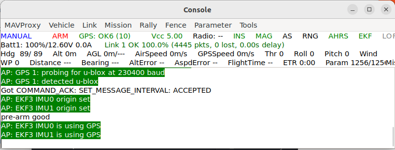
Load the mission
At the MAVProxy prompt (note, you will need to adjust the absolute path to your repo location!):
wp load /home/CHANGE_TO_YOUR_USER/maritime_ws/install/share/blueboat_gazebo/missions/lawnmower.waypoints
wp list
Expect Loaded 7 waypoints, then Flight plan received in the console, and the six legs drawn on the map.
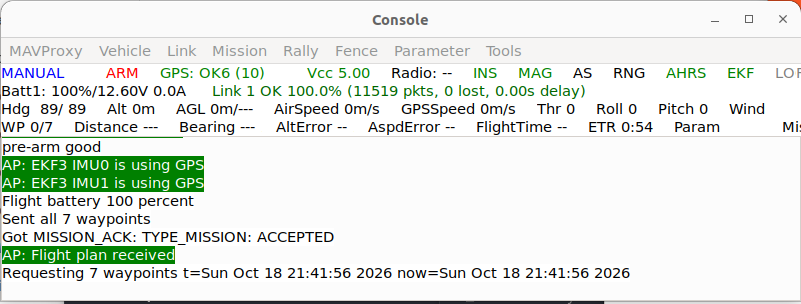
Fly it
arm throttle
mode auto
Then touch nothing. The console reports Mission: 1 WP, then Reached waypoint #1 through #6, then Mission Complete. The boat then loiters at home (MIS_DONE_BEHAVE 1). To stop, mode manual and disarm.
When running, you should see these windows.
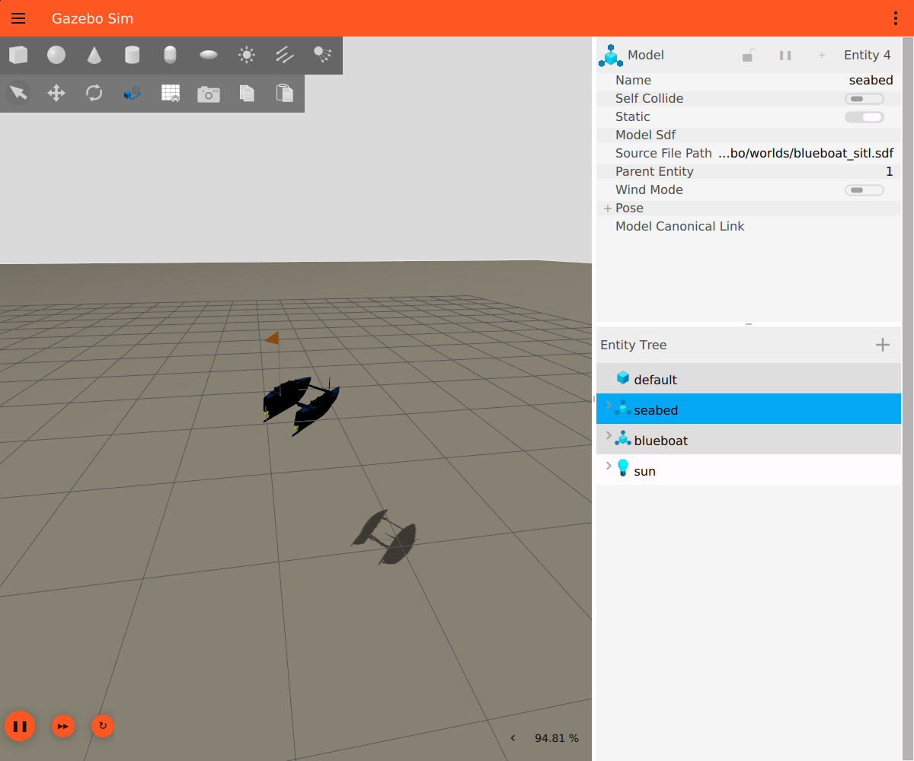
Gazebo: the BlueBoat on the course.
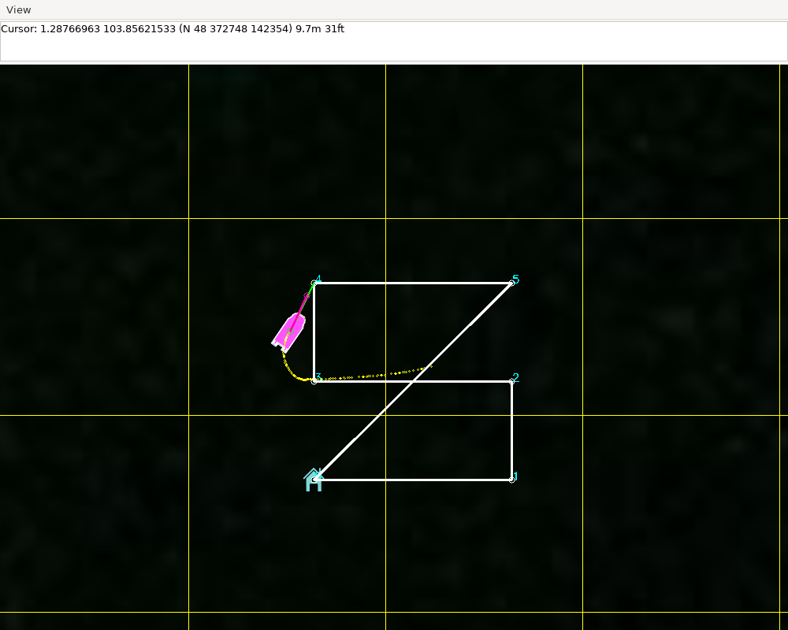
Map: the planned legs in white, the track flown in yellow, heading for waypoint 4.
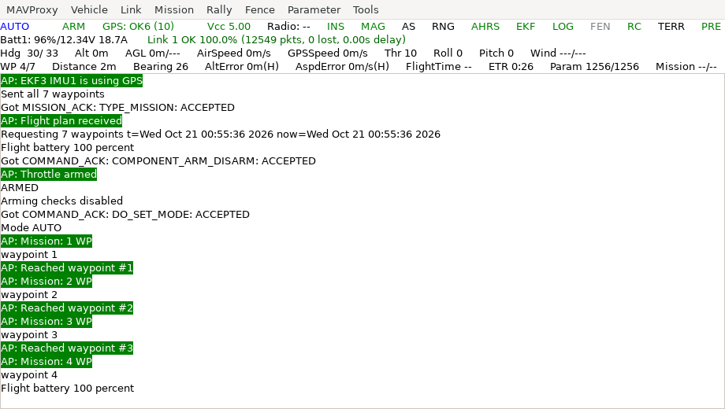
Console: GPS lock, flight plan received, armed, AUTO, waypoints 1 to 3 reached.
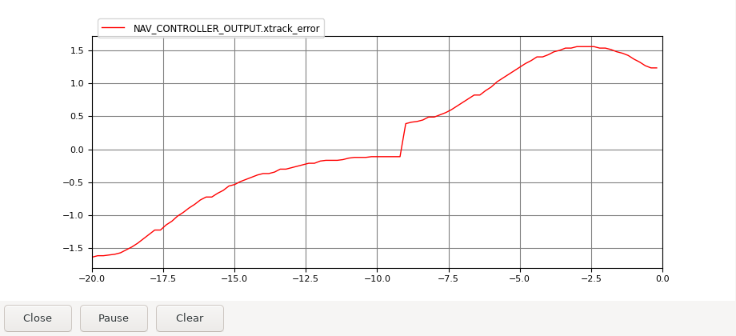
Cross-track error [m] over the last 20 s.
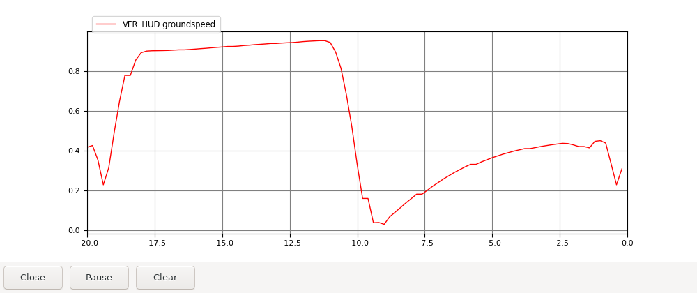
Groundspeed [m/s] over the last 20 s, dropping to zero for the pivot at a waypoint.
At the end of the mission:
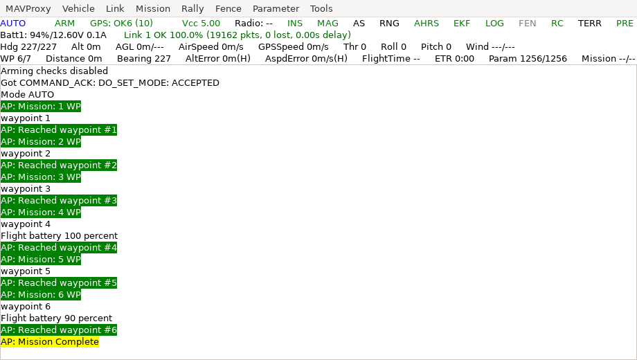
Console: all six waypoints reached, then Mission Complete.
Video of the full mission is here: YouTube
What a correct run looks like
SITL steps in lockstep with Gazebo, so the run is deterministic. Repeated runs here agreed to 0.01 m and 0.1 s, and a reviewer should see the same figures, not just similar ones. Times are from mode auto.
Leg |
Reached at [s] |
Leg time [s] |
Peak |xtrack| [m] |
|xtrack| at arrival [m] |
|---|---|---|---|---|
home → WP1 |
13.9 |
13.9 |
0.01 |
0.00 |
WP1 → WP2 |
28.8 |
14.9 |
1.2 |
0.25 |
WP2 → WP3 |
47.3 |
18.5 |
1.6 |
0.09 |
WP3 → WP4 |
63.2 |
15.9 |
1.5 |
0.26 |
WP4 → WP5 |
81.5 |
18.3 |
1.7 |
0.10 |
WP5 → WP6 |
108.0 |
26.5 |
2.3 |
0.06 |
Speed. 1.0 m/s on the first leg, which is the target
WP_SPEED. dropping to about 0 at each waypoint for the pivot, then 0.8–0.95 m/s on the later legs before slowing for the next waypoint.Mission time. 108 s, all six waypoints reached,
Mission Complete.End. The boat holds within 0.4 m of home - loitering
The plots below visualize the data. The graphs are illustrative; the project does not contain the post-processing source.
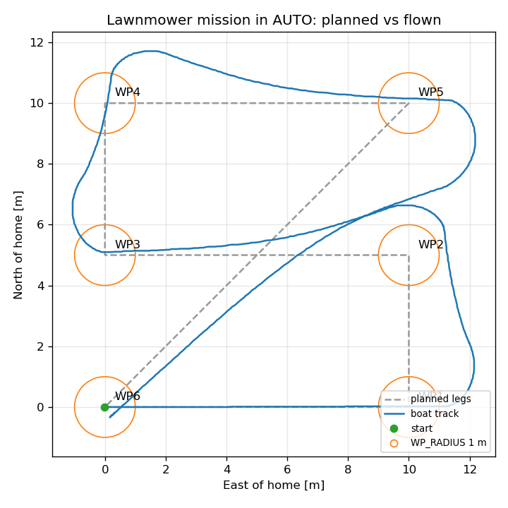
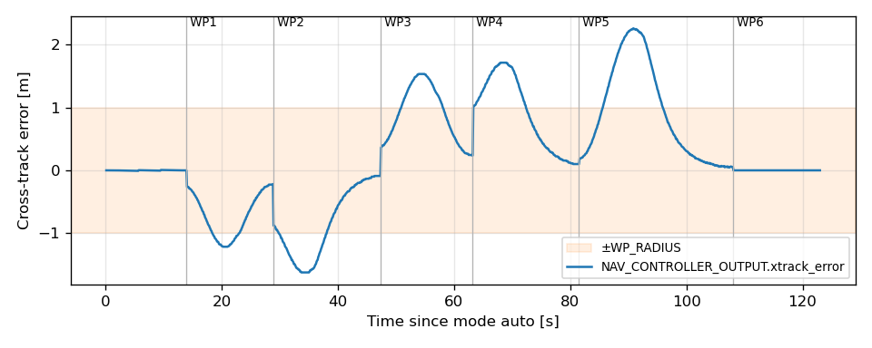
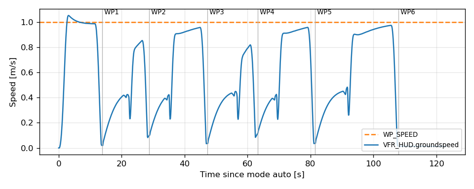
Assessment
The controller stack can obviously be optimized - as it always can. However, that is not the point. The goal is a “digital cousin”, simulated closed-loop dyanmics that mimic the actual vessel with the SILT Ardu controller and guidance running. Because the closed-loop behavior is similar that of the hardware, and SITL uses that real-time code and parameter set, we have reasoanble confidnece that any modifications to the controller in sim, can be evaluted in sim and then seemlessly transitioned to hardware.
Troubleshooting
Observation |
What it means |
|---|---|
|
sent before ArduPilot was ready; wait for |
|
the mission did not load; repeat |
the boat turns before the first leg |
the boat is not spawned facing east, or |
the boat circles a waypoint and never reaches it |
it cannot get inside |
the boat arcs through corners at speed instead of stopping |
the |
large, steady cross-track on a leg |
the speed or heading loop; re-run Tuning before suspecting the navigator |
times or errors differ from the table |
something in the vehicle, the parameters or the firmware version changed; the run is deterministic, so a difference is a change, not noise |